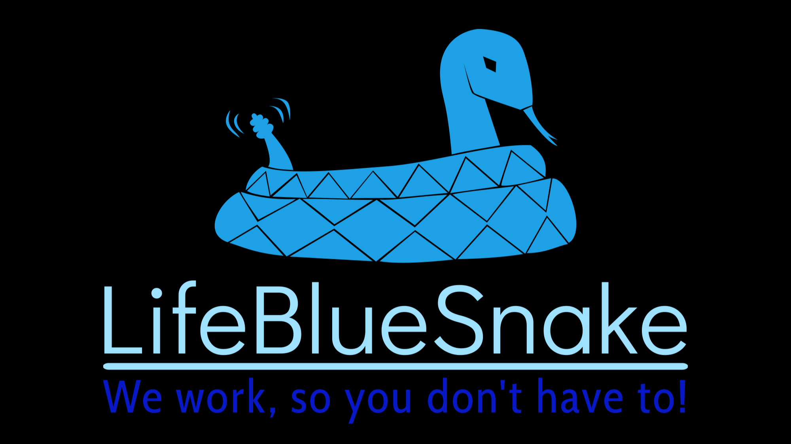

[Go to GitHub]
LifeBlueSnake is a cross-platform desktop application developed using JavaScript and Electron framework. It was created as an additional school project, with a focus on developing an application centered around a theme of my choice. This marks my first significant project, showcasing my skills in software development.
The primary purpose of LifeBlueSnake is to facilitate efficient task assignment within organizational settings. The application is designed to streamline the process of distributing and managing tasks among team members. One of its notable features is its cross-platform compatibility, allowing users to access and utilize the application seamlessly on various operating systems.
To enhance user convenience, LifeBlueSnake is packaged as an executable, eliminating the need for a traditional installation process. This approach ensures that users can easily integrate the application into their workflow without any unnecessary complications.
In summary, LifeBlueSnake serves as a user-friendly solution for organizations seeking a straightforward and effective tool for task assignment. Its cross-platform nature and executable packaging make it a versatile choice for teams working on different operating systems.
Nalim1234Please note that LifeBlueSnake is a prototype created as an additional school assignment and is not intended for use by other companies. While its functionality closely resembles real applications designed for this purpose, it serves primarily as a demonstration of skills and knowledge acquired during the development process.
This project is licensed under the terms of the MIT License.
The large files in this repository are managed using Git LFS (Large File Storage). Git LFS is licensed under its
own terms.